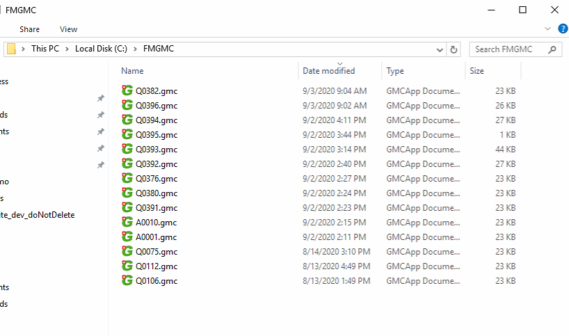
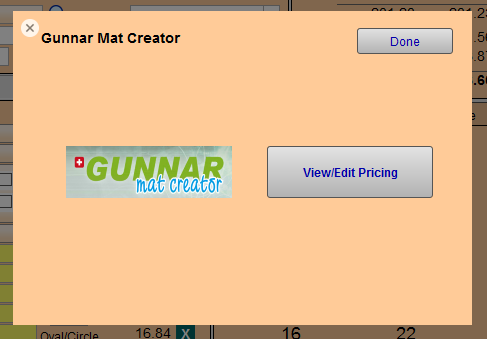
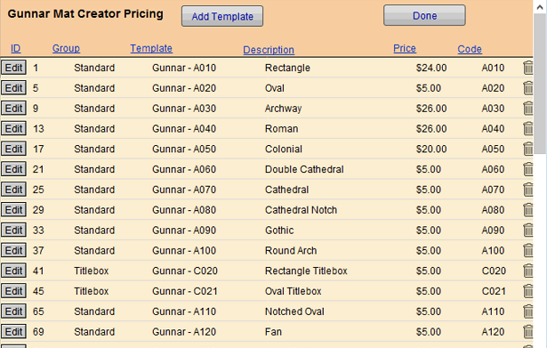
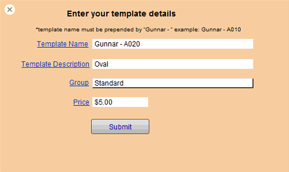
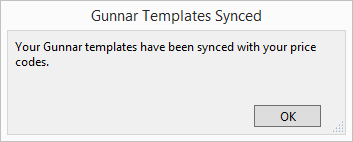
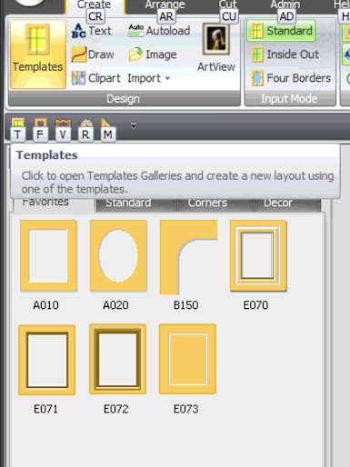
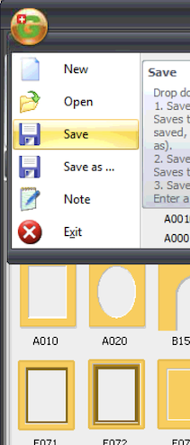
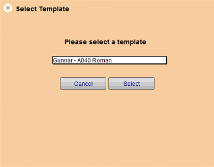

CMC Gunnar
The Gunnar™ software allows you to select and build Gunnar™ designs.

Requirements
-
Requires compatible Gunnar CMC and software.
-
Gunnar Mat Designer software is available only for Windows.
-
Requires FrameReady 13 and FileMaker Pro 19.4 or greater.
Before You Begin...
Set Gunnar As Your Default CMC
Tip: You will only need to do this step once.
-
Make sure that you have the Gunnar Mat Designer program installed on your computer.
-
Create a folder in the root of your C:\ drive named FMGMC . The folder should have read/write permissions.
This folder is the sharepoint where the Gunnar integration files are created and sent between FrameReady and Gunnar.

-
In FrameReady, from the Main Menu, open the Options tab in the Work Order section.
-
Click the More Options button.
-
Open the Work Order Defaults tab, and select Gunnar.
-
Click Done.
How to Change Your Gunnar Template Prices
Note: The standard Gunnar templates come pre-loaded in FrameReady. See: Add Mat Design Options to CMC
-
From any Work Order (form view), click the CMC button.
-
In the card that appears, click the View/Edit Pricing button.

-
The Gunnar Mat Creator Pricing window appears.
You can sort by Group, Template name, Description and/or Price.

-
All Gunnar templates names have a "Gunnar" prefix, e.g. Gunnar - A010
-
Locate the template and click the Edit button (far left).
-
A new window appears. Edit the template details and click Submit to save your changes.

-
To add a new template, click the Add Template button.
-
A new window appears. Enter the details and price for the new template. Click the Submit button to save your changes, or click the X (top left) to close.
-
Use the trashcan icon to delete a template record.
-
Click Done when complete.
Sync Button

Multiple Mats
-
If your design requires multiple matboards, then you must begin in Gunnar Mat Creator (see Option A below).
-
As you add new matboards into Gunnar, you will then set their Distance measurements. These numbers will correctly import into FrameReady as the Reveals for each matboard.
How to Add a Gunnar Mat Design to a New Work Order (Option A)
Use this option if you are entering measurements into Gunnar Mat Creator or are using multiple matboards.
-
Create a new Work Order with no opening dimensions.
-
Click the CMC button.
-
In the card that appears, click the Gunnar Mat Creator logo.
-
The Gunnar Mat Creator software loads and appears on-screen.

-
Note that the GMC file name matches the FrameReady Work Order number, e.g. A1003.
Select the Gunnar template you wish to use by clicking the Templates button (top left). -
Make any adjustments on the next Create screen. Enter your mat width and height, opening width and height, border dimensions and click the Create button.
-
Click Next, to step through the Create and Arrange tabs.
-
Pause at the Cut tab.
-
Click the Gunnar logo (top right) and choose Save or press Ctrl + S on your keyboard.

-
Return to FrameReady and click the Pull button (below the CMC button.)
-
The opening size width and height, mat margins, mat design and retail price are loaded into FrameReady.
How to Add a Gunnar Mat Design to a New Work Order (Option B)
Use this option if you are adding dimensions into FrameReady and are not using multiple matboards.
-
Create a new Work Order.
-
Enter your opening Width and Height dimensions, set the Mat Margins.
-
In the Mat Design field, select a Gunnar template.
If you skip this step, then after clicking the CMC button, FrameReady prompts you to choose a Gunnar template before you can proceed. -
Click the CMC button.
-
In the card that appears, click the Gunnar Mat Creator logo.
-
A new window appears. Select a Gunnar template in the drop-down menu and click Select.

-
The Gunnar software interface appears.
-
The GMC file matches the FrameReady Work Order number. The Gunnar template you chose in FrameReady is displayed in Gunnar Mat Designer along with the the dimensions and information you entered into FrameReady.
-
Continue with any additional changes.
-
Click the Gunnar logo (top right) and choose Save or press Ctrl + S on your keyboard.
-
Return to FrameReady and click the Pull button (below the CMC button.)
-
The opening size width and height, mat margins, mat design, and retail price are loaded into FrameReady.
Note on Using Gunnar Title Boxes
-
If a Titlebox is added to your Gunnar mat design, then after saving and clicking Pull in FrameReady, additional notes are added in the Notes field, e.g. Titlebox - Width: 6 Height: 3, Titlebox Centered.
-
Each Titlebox increases the value in the Extra Opening field, e.g. two Titleboxes in Gunnar will add a 2 in the Extra Opening field.
Note on Using White Space
-
Any White Space added to a Work Order in FrameReady correctly transfers to Gunnar Mat Creator.
Gunnar Autoload Feature
The Gunnar Mat Creator software can integrate with any pricing software package, through it's "Autoload Mode" to automatically create cutting files, saving time and streamlining your production.
How to Batch Export Work Orders into Gunnar Mat Creator
Important: Once Autoloads are imported, they should not be modified. Do not make adjustments to designs.
Please make all modifications before creating the Gunnar Autoload files.
-
Click Find Work Order.
-
In the MatDesign field, enter Gunnar
-
Either click Incomplete or enter a Date range.
You may want to search for additional fields. -
Click Perform Find.
-
In the menu bar, click Perform and select Create Gunnar Autoload File(s).
Gunnar Mat Creator opens. -
In Gunnar Mat Creator, click the Autoload button.
-
In the Autoload Files panel, double-click autoload.dat .
The list of Work Orders appears in the Autoload Data panel. Each line is a separate Work Order. -
Click each line item for a preview.
Each autoloaded item includes a label identifying the Work Order number and the Matboard Description.
For further information on Autoload, include link to Gunnar video
Important: Once Autoloads are imported, they should not be modified. Do not make adjustments to designs.
Please make all modifications before creating the Gunnar Autoload files.
© 2023 Adatasol, Inc.